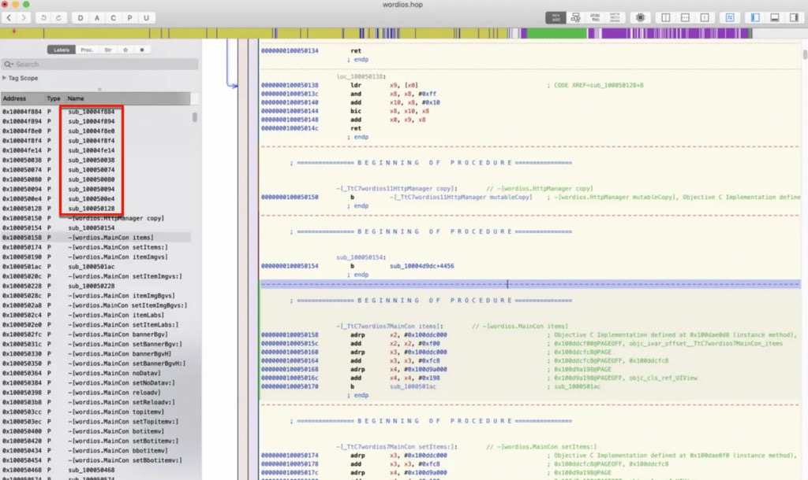
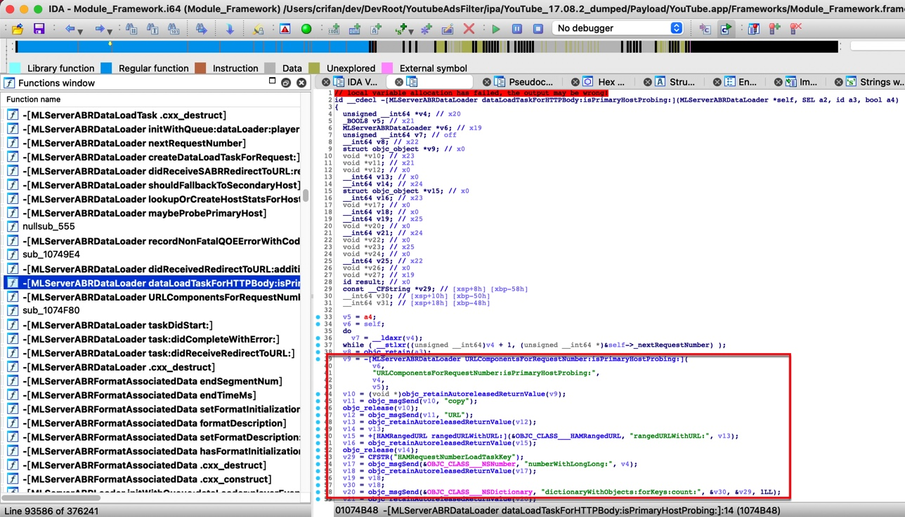
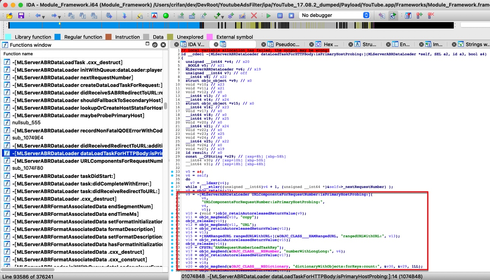
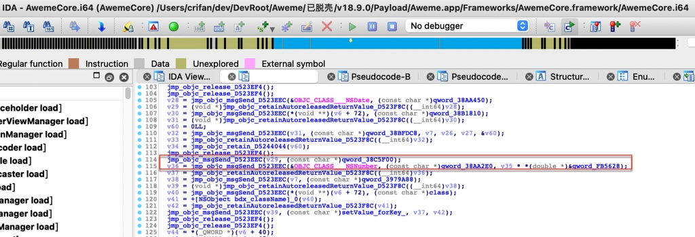
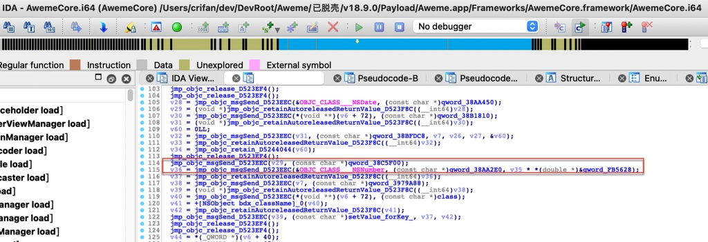

代码混淆
iOS安全从代码角度，可以去做：代码混淆
- 代码混淆 目的
- 更好地保护代码，增加逆向破解难度 = 不被轻松地恶意分析破解
- 代码混淆 优缺点
- 优点
- 无须变动项目源码
- 功能灵活可选，根据需要自由组合
- 缺点
- 导致安装包体积增大
- 混淆后的代码有会被编译优化掉的风险
- 提交审核（AppStore）存在被拒的风险
- 优点
- 代码混淆方式=子功能模块
- obf=Obfuscator 类
bcf=Bogus Control Flow=虚假块=伪控制流fla=cff=Control Flow Flattening=控制流展开=控制流平坦化split=基本块分割sub=Instructions Substitution=指令膨胀=指令替换acd=anti class-dump=反class-dump
indibran=indiret branch=基于寄存器的相对跳转，配合其他加固可以彻底破坏IDA/Hopper的伪代码(俗称F5) = 故意制造堆栈不平衡，不能F5，函数内利用寄存器跳转BR X12strcry=字符串加密funcwra=函数封装- 插入垃圾指令
- obf=Obfuscator 类
- iOS代码混淆工具
Obfuscator-LLVM=ollvmios-class-guard=iOS Class GuardHikari
- iOS代码混淆后的效果
- 导出头文件后，函数名变乱码
- 比如：
money变成xadsf32showMoney变成AFAdsaf123
- 比如：
- iOS逆向后看到的代码中的函数，都是无名的函数
- 比如：
- Hopper逆向app后，有很多函数名都是：sub_xxx，就表示，该函数被混淆了
- 
- Hopper逆向app后，有很多函数名都是：sub_xxx，就表示，该函数被混淆了
- 对比
YouTube：没有代码混淆 -> IDA伪代码中能看到明文的objc_msgSend的函数调用- 
- 都可以看到类似于：
objc_msgSend(&OBJC_CLASS___NSNumber, "numberWithLong:", 1)
- 这种近乎原始代码的效果
- 都可以看到类似于：
- 
抖音：有代码混淆 -> IDA伪代码中，完全看不到明文的objc_msgSend的函数调用- 
- 注：其中的
jmp_objc_msgSend_xxxx(xxx, (char *)qword_xxx, xxx)这类的调用中的jmp_objc_msgSend_xxxx是在逆向后，搞懂函数调用后，改名优化后的伪代码
- 注：其中的
- 
- 比如：
- 导出头文件后，函数名变乱码